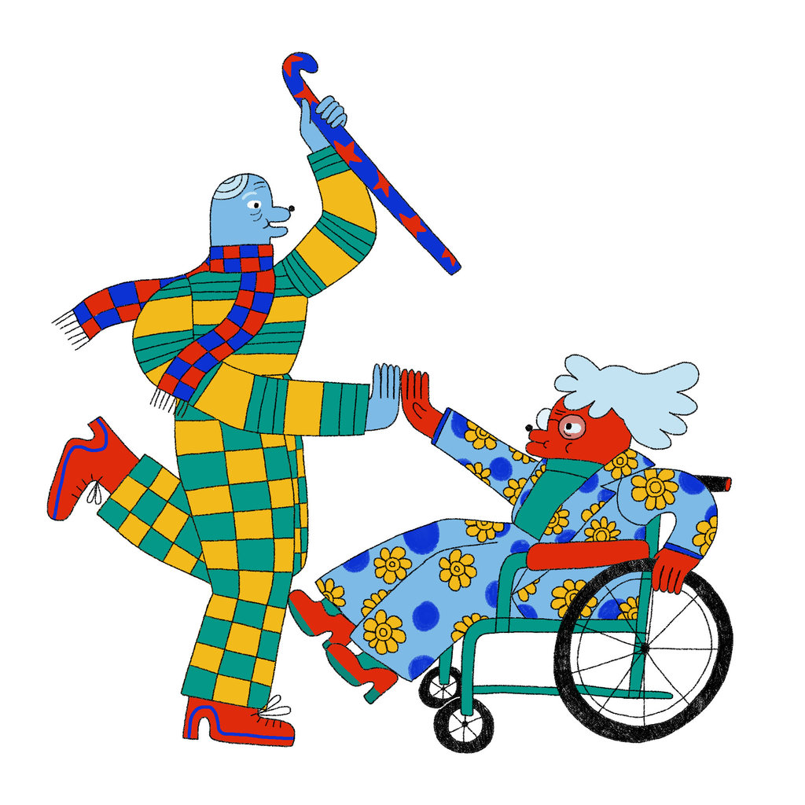
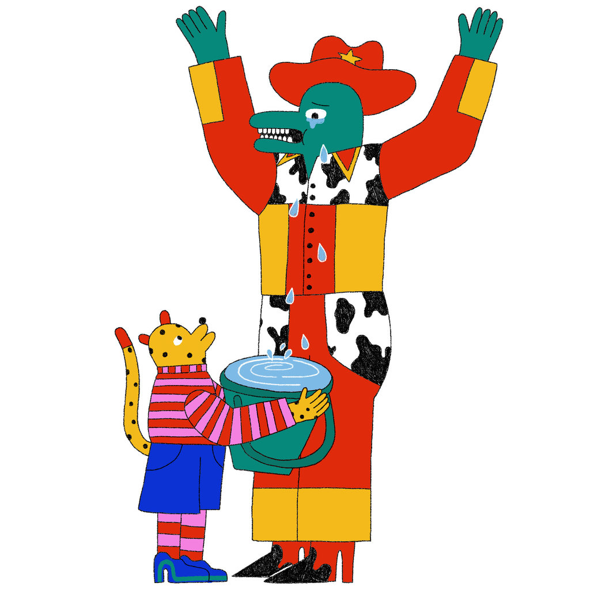
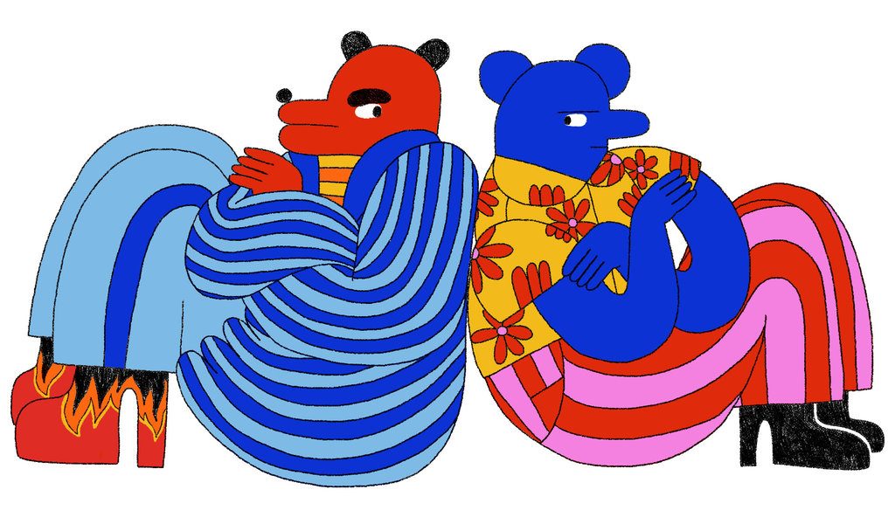

The Benefits of Friendship
Family relationships often come with a dose of guilt and obligation. Friends, on the other hand, are the antidote to the burdens of daily life.
Friends With Health Benefits
Most of the research on health and relationships is focused on romantic partners. But researchers have found that our friendships actually have a bigger impact on our health. Here are some of the findings about the health benefits of having friends:
- A 10-year Australian study found that older people with a large circle of friends were 22 percent less likely to die during the study period than those with fewer friends.
- In 2006, a study of nearly 3,000 nurses with breast cancer found that women without close friends were four times as likely to die from the disease as women with 10 or more friends. Notably, proximity and the amount of contact with a friend was not associated with survival. Just having friends was protective. Having a spouse was not associated with survival.
- In a six-year study of 736 middle-age Swedish men, being attached to a life partner did not affect the risk of heart attack and fatal coronary heart disease, but having friendships did. Among risk factors for cardiovascular health, lacking social support was as bad as smoking.
Why are friendships so good for us? Scientists have a few theories:
Logistical support: Friends can run errands and pick up medicine for a sick person, although in most studies, proximity was not a factor in the benefits of friendship.
Association: It may be that people with strong social ties also have better access to health services and care or are more likely to seek help.
Less stress: People with strong friendships are less likely than others to get colds, perhaps because they have lower stress levels.
Positive peer pressure: Researchers have found that certain health behaviors appear to be contagious and that our social networks — in person and online — can influence obesity, anxiety and overall happiness. A recent report found that a person's exercise routine was strongly influenced by his or her social network.
But it could also work the opposite way, a large 2007 study showed an increase of nearly 60 percent in the risk for obesity among people whose friends gained weight.
How to Make Frienship Last
Friends have a bigger impact on our psychological well-being than family relationships, so why is it that we often put family and work demands ahead of our friends?
Finding Time for Friends
Often when we think of living a balanced life, we focus on two things: work and family. But a truly balanced life really has five key components: It should also include our romantic lives, self-care (including exercise and hobbies) and our friends . While we may not always give all five areas equal time (a new baby or a work deadline can sometimes shift our life balance), in general, work, family, love, self-care and friends are allequally important . The good news is that friends tend to be less demanding of our time than family members and bosses, so tending to our friendships can take up a lot less time than other demands. Here are some tricks for giving your friendships more time and attention.
Schedule friend dates. Just as you might schedule a date night or a business meeting, it's important to build friendship maintenance into your weekly schedule. Friend dates can be squeezed in around morning coffee or lunch so they don't take time away from children, romantic partners or work deadlines. If your home life will allow it, give yourself a friends' night out once or twice a month, rotating the friends with whom you spend time. When life gets hectic because of parenting or work demands, your friendships tend to be the first to suffer. But if you schedule friend dates regularly, your friendships will stay strong no matter what challenges are ahead.
A few minutes of friendship goes a long way. I've never forgotten an exchange with my friend Julie Mason, now host of the Sirius radio program “The Press Pool,” when we were both new reporters at The Houston Chronicle. I stopped by her desk with a question and noticed she was on deadline. “That's O.K.,” she said, turning around to show me I had her full attention. “I've always got five minutes for a friend.” The moment made such an impression on me that I've tried to make it my mantra: “I've always got five minutes for a friend.” And I've also remembered the importance of body language — turning to give them my full attention (and putting down my phone or work) when I see them. While it's true that some friends are more high-maintenance than others, in general, our friends are more understanding and less demanding than most people in our lives. Don't avoid friends because you can't give them hours of your attention. It takes only a few minutes of listening and care to make a connection and reinforce the bonds of friendship. Take five minutes to call or text, and just tell a friend you are thinking about them.
Consistency matters more than frequency. Creating a tradition — even if it's infrequent — is one of the best ways to sustain a friendship when life gets busy. My mother-in-law has joined an annual reunion of her college cheerleader squad for the past 60 years. An editor I know has met with a group of grade school friends every New Year's Eve for the past 40 years. Look at the calendar and start a new annual tradition with your friends (a joint birthday celebration, a National Dog Day dog walk, an adult Halloween treat night or a tax-day cocktail). If you want more frequent time together, check your schedules and think about the potential for a consistent monthly meetup. It doesn't take much effort to start a tradition. One of my good friends, a teacher and actress, has classes most days, but we discovered that both of our calendars are open on Wednesday mornings. Now we meet about one morning a month at a favorite diner in our neighborhood.
Exercise with friends. Scheduling exercise with a friend is a great way to stay connected, and it has the added bonus of boosting your physical wellbeing. It can be a weekly walk or a twice-weekly run — whatever works to get the two of you in the same space with time to talk.
Take a class. We have limited time for both our hobbies and our friends, so why not nurture both needs at the same time and bring a friend in on the fun. If you've signed up for an art class or a cake-decorating or cooking class, invite your friends to join you. And if you get a similar invitation, just say yes, even if it's a new hobby you haven't tried.
How to Talk and Listen to Your Friends
Good listening skills matter in all relationships, but how you talk to and listen to your friends can make the difference between a casual connection and a lasting friendship.
Really Listen
Elizabeth Scott, a family therapist and author of the new book “8 Keys to Stress Management,” notes that there are five basic steps to improving your listening skills with a friend in need.
- Listen to the answers. Often when people say “How are you?” they don't really listen to the answer. Maintain eye contact with your friend, stay present and show them “you're interested in what they have to say,” she writes.
- Repeat what you hear. Ms. Scott notes that when we summarize and repeat thoughts back to someone, they know we are hearing them. “It looks like things are getting pretty hostile” and “You sound like you're feeling hurt” are two examples of things you might say when your friend is sharing about a difficult conflict.
- What are you feeling?Don't know what to say? Ask your friend what they are feeling rather than discussing the details of the situation, writes Ms. Scott.
- Keep the focus on them. While it's fine to say you can relate or to share a few details about your own experience, don't shift the focus of the conversation to your situation and feelings.
- Brainstorm.Rather than jumping in with advice, guide your friend in a brainstorming session to find solutions. For example, you can ask: What do you want to do about this? How does that make you feel? Do you see any other options?
How to Argue With Your Friends
Conflict is an unavoidable part of the human experience. But while we know that spats with a spouse or family member can be smoothed over, a fight with a friend can feel more risky.
How to Resolve Conflict with Your Friends
Sometimes our differences with our friends are too great to overcome through practicing acceptance, so instead we need to find a way to resolve the conflict. Nobody likes conflict, but relationship researchers say every conflict presents an opportunity to improve a relationship. The key is to learn to fight constructively in a way that leaves you feeling better about your friends.
Much of what we know about conflict resolution in relationships comes from studies of married couples, but the basic conflict resolution strategies are the same whether you are talking about close relationships, friendships or workplace conflicts.
The marriage researcher John Gottman found that the most important part of any personal disagreement are those first few minutes when the fight is just getting started. Here's some general advice from the research about how to resolve conflict with a friend or lover.
Identify the complaint, not the criticism. Don't start the conversation by criticizing your friend. Focus on what made you unhappy, and be specific about your complaint. “I was upset that we didn't get to spend time together at the party,” is a much better conversation starter than, “You're never around when I need you.”
Avoid “you” phrases. Phrases like “You always” and “You never” are almost always followed by criticism and blame.
Think about pronouns. Sentences that start with “I” or “We” help you identify problems and solutions, rather than putting blame on someone else.
Be aware of body language. No eye-rolling, which is a sign of contempt. Look at your friend when you speak. No folded arms or crossed legs, to show you are open to their feelings and input. Sit or stand at the same level as your partner — one person should not be looking down or looking up during an argument.
Learn to de-escalate: When the argument starts getting heated, take it upon yourself to calm things down. Here are some phrases that are always useful in de-escalation:
- “What if we…”
- “I know this is hard…”
- “I hear what you're saying…”
- “What do you think?”
Dr. Gottman reminds us that fighting with people who are important to you is not a bad thing. After all his years of studying conflict, Dr. Gottman has said he's a strong believer in the power of argument to help people improve their relationships. In fact, airing our differences gives our relationship “real staying power,” he says. You just need to make sure you get the beginning right so the discussion can be constructive instead of damaging.